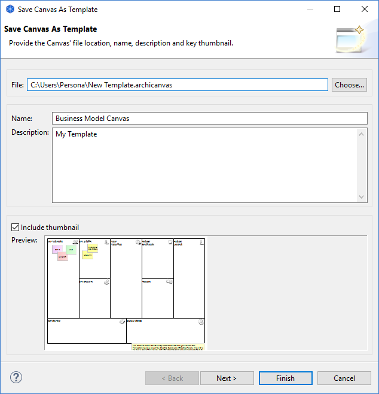
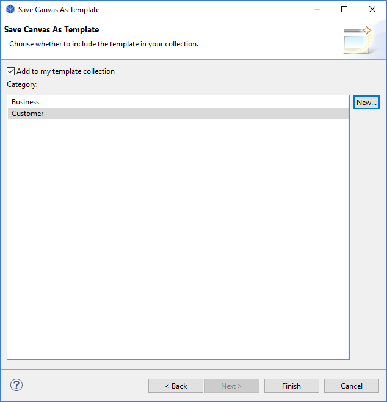

将画布另存为模板
要将现有画布另存为模板，请执行以下步骤：
- 创建新画布或打开包含画布的现有模型。
- 在模型树中选择画布，右键单击并选择“将画布另存为模板...”。向导将打开：

- 在向导中，提供模板文件位置的文件名、模板的名称（与模型名称不同）和描述。
- 选择是否要在模板中包含画布的略图图像。
- 单击“下一步”转到向导的下一页：

- 选择是否要将模板添加到集合中。您的模板集合是一个按类别排序的列表，将显示在"从模板新建画布"向导。如果没有可供选择的类别，则可以通过单击向导中的"新建... "按钮来创建新类别。
- 按“完成”。
模板将以“* .archicanvas”扩展名保存在您的文件系统中。如果您愿意 ，可以与其他 Archi用户共享此模板。